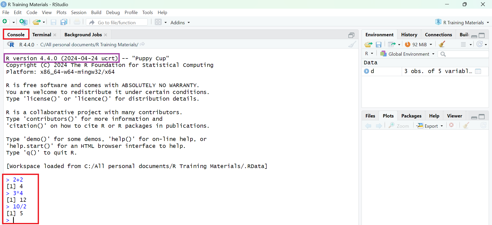
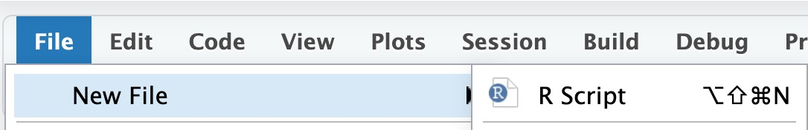
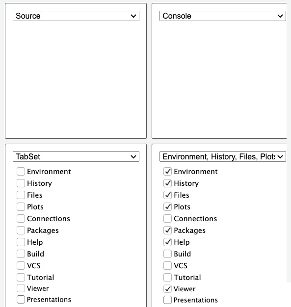
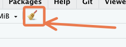
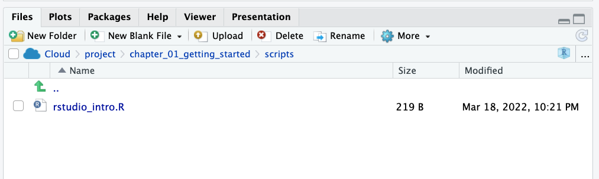
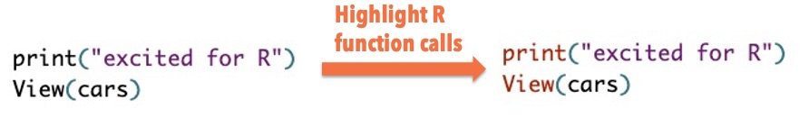
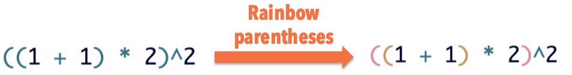
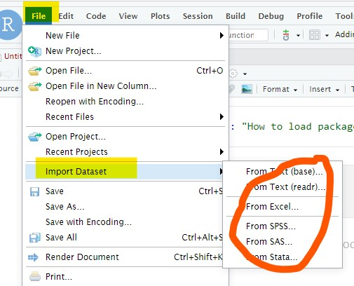

02:00
Introduction to R
Introductions
Take few minutes to introduce ourselves.
Please share …
- Your name
- Your experience in R
- What you expect at end of the training
Outlines
Part 1: Introduction/Overview of R and R Studio
Working with R: Objects and Workspace
R Objects & Project Management
Good Coding Practice
Part 2: Data management using tidyverse package
Part 3: Data visualization
Part 4: Statistical Analysis
Setting up and utilizing R & RStudio
Navigating R & Rmarkdown scripts and RStudio projects
Importing and inspecting data sets in R
Manipulating data through filtering, summarizing, transforming, and joining
Visualizing data using the renowned ggplot2 package
Why R?
Your callout content goes here.
It is free, versatile, fast, and modern.
It has a large and friendly community of users that help answer questions and develop new R tools.
With more than 20394 add-on packages available, R offers more functions for data analysis than any other statistical software.
R makes it easy to construct reproducible analyses and workflows that allow you to easily repeat the same analysis more than once.
It is flexible enough to be used to create interactive web pages (eg. my draft website) and automated reports.
Simply currently the best tool there is for data analysis.
What are Advantages or Disadvantages of R
Advantages
- Availability and compatibility
- State of the art graphics capabilities
- Can import files from other (statistical) programs
- New version every x months
- Interactive development environments (IDEs) available
- Large users community
- reproducible research
Drawbacks of R
- Expert friendly
- Learn by example
- Not very (easily) interactive
- Command based
- Documentation sometimes cryptic
- (Too) large amount of resources
- Constantly evolving
- Memory intensive and slow at times
2. RStudio
What is RStudio? Why use it?
Best Integrated Development Environment (IDE) for R.
Powerful and makes using R easier
RStudio can:
Organize your code, output, and plots.
Auto-complete code and highlight syntax.
Help view data and objects.
Enable easy integration of R code into documents.
User-friendly interfaces
Set up on Windows
Download and install R
- Follow the steps below to download and install R:
Go to cran.rstudio.com to access the R installation page. Then click the download link for Windows:
Choose the “base” sub-directory.
Then click on the download link at the top of the page to download the latest version of R:
Note that the screenshot above may not show the latest version.
After the download is finished, click on the downloaded file, then follow the instructions on the installation pop-up window. During installation, you should not have to change any of the defaults; just keep clicking “Next” until the installation is done.
Well done! You should now have R on your computer. But you likely won’t ever need to interact with R directly. Instead you’ll use the RStudio IDE to work with R. Follow the instructions in the next section to get RStudio.
Download, install & run RStudio
To download RStudio, go to rstudio.com/products/rstudio/download/#download and download the Windows version.

Then click on the downloaded file and follow the installation instructions.
Now Click to to open the app from the start menu:


RStudio Overview

Getting Started
- RStudio will open with 4 sections (called panes):
1. Source editor pane**
- You will write your R code/script here and it will be run in the console.
- To create a new R script you can either go to
File -> New -> R Script, or click on the icon with the+sign and selectR Script, or simply pressCtrl+Shift+N. - Make sure to save the script.
2. Console pane
- Interactively run R commands
3. Environment/history pane**
- Environment: view objects in the global environment
- History: search and view command history
4. Files/Plots/Packages/Help pane**
- Files: navigate directories and
- Plots: view generated plots.
- Packages: manage packages (install or update)
- Help: View help documentations for any package/function
Customization
Panes
The size and position of the panes can be customized.
On the top right of each pane, there are buttons to adjust the pane size.
Also, place your mouse pointer/cursor on the borderline between panes and when the pointer changes its shape, click and drag to adjust the pane size.
For more options, go to View > Panes on the menu bar.
Alternatively, try Tools > Global Options > Pane Layout.
Appearances
The overall appearance can be customized as well.
Go to Tools > Global Options> Appearance on the menu bar to change themes, fonts, and more.
The RStudio panes
By default, RStudio is arranged into four window panes.
If you only see three panes, open a new script with File > New File > R Script . This should reveal one more pane.

Before we go any further, we will rearrange these panes to improve the usability of the interface.
- Then under
Pane Layout, adjust the pane arrangement. The arrangement we recommend is shown below.

At the top left pane is the Source tab, and at the top right pane, you should have the Console tab.
Then at the bottom left pane, no tab options should checked—this section should be left empty, with the drop-down saying just “TabSet”.
Finally, at the bottom right pane, you should check the following tabs: Environment, History, Files, Plots, Packages, Help and Viewer.
First, open a new script under the File menu if one is not yet open: File > New File > R Script. In the script, type the following:
print("excited for R!")To run code, place your cursor anywhere in the code, then hit
Control+Enteron Windows.This should send the code to the Console and run it.
You can also run multiple lines at once.
print("excited for R!")
print("and RStudio!")Now drag your cursor to highlight both lines and press
Control+Enter.To run the entire script, you can use
Control+Ato select all code, then press `Control+Enter.
- To open the script in a new window, click on the third icon in the toolbar directly above the script.

To put the window back, click on the same button on the now-external window.
Next, save the script. Hit
Control+Sto bring up the Save dialog box.
Console
The console, at the bottom left, is where code is executed. You can type code directly here, but it will not be saved.
Type a random piece of code (maybe a calculation like
3 + 3) and press ‘Enter’.

If you place your cursor on the last line of the console, and you press the up arrow, you can go back to the last code that was run. Keep pressing it to cycle to the previous lines.
To run any of these previous lines, press Enter.
Environment

At the top right of the RStudio Window, you should see the Environment tab.
The Environment tab shows datasets and other objects that are loaded into R’s working memory, or “workspace”.
To explore this tab, let’s import a dataset into your environment from R.
Type the code below into your script and run it:
data <- irisYou have now imported the dataset and stored it in an object named data. (You could have named the object anything you want.)
- Now that the dataset is stored by R, you should be able to see it in the Environment pane.
- If you click on the blue drop-down icon beside the object’s name in the Environment tab to reveal a summary.
- Try clicking directly on the
datadataset from the Environment tab. This opens it in a ‘View’ tab.
- The broom icon, at the top of the Environment pane is used to clear your workspace.

- You can also remove an object from the workspace with the
rm()function. - Type and run the following in a new line on your R script.
rm(data)Notice that the data object no longer shows up in your environment after having run that code.
History
- Next, the History tab shows previous commands you have run.
You can click a line to highlight it, then send it to the console or to your script with the “To Console” and “To Source” icons at the top of this tab.
To select multiple lines, use the “Shift-click” method: click the first item you want to select, then hold down the “Shift” key and click the last item you want to select.
Finally, notice that there is a search bar at the top right of the History pane where you can search for past commands that you have run.
Files
- Next, the Files tab. This shows the files and folders in the folder you are working in.

The tab allows you to interact with your computer’s file system.
Try playing with some of the buttons here, to see what they do. You should try at least the following:
Make a new folder
Delete that folder
Make a new R Script
Rename that script
Plots
- Next, the Plots tab. This is where figures that are generated by R will show up.
- Try creating a simple plot with the following code:
plot(women)
That code creates a plot of the two variables in the
womendataset.You should see this figure in the Plots tab.
Now, test out the buttons at the top of this tab to explore what they do.
In particular, try to export a plot to your computer.
Packages
- Next, let’s look at the Packages tab.
Packages are collections of R code that extend the functionality of R.
it is important to know that to use a package, you need to install then load it.
Packages need to be installed only once, but must be loaded in each new R session.
All the package names you see (in blue font) are packages that are installed on your system. And packages with a checkmark are packages which are loaded in the current session.
Installing and Loading Packages
- Packages are collections of R functions, data, and compiled code in a well-defined format.
- There are three categories of packages.
1. Base Packages: Providing the basic functionality, maintained by the R Core Development group. Currently, there are 14 packages, these are
rownames(installed.packages(priority="base")) [1] "base" "compiler" "datasets" "graphics" "grDevices" "grid"
[7] "methods" "parallel" "splines" "stats" "stats4" "tcltk"
[13] "tools" "utils" 2. Recommended Packages: also a default package, mainly including additional more complex statistical procedures. These are 15 packages
rownames(installed.packages(priority="recommended")) [1] "boot" "class" "cluster" "codetools" "foreign"
[6] "KernSmooth" "lattice" "MASS" "Matrix" "mgcv"
[11] "nlme" "nnet" "rpart" "spatial" "survival" 3. Contributed packages: Due to the open nature of R, anyone can contribute new packages at any time.
- Currently, the CRAN package repository features 20394 available packages.
nrow(available.packages())Installing Packages
- Option 1: Menu

- Option 2: Packages Window

- Option 3: Code
install.packages("readxl") Loading Packages
library() # see all packages installed
search() # see packages currently loadedUpdating R and RStudio
Updating R
Go to CRAN and download new version
More efficient: install
installrpackage, load it, and runupdateR()- Updates R and Optionally updates all packages
- May be better to do this in
basic Rgui
Version should update automatically in RStudio
- Check/change R version under Tools>Global Options>R version
Then update the R packages with the code:
update.packages(ask = FALSE, checkBuilt = TRUE)To updating RStudio: Go to RStudio and download new version
Click on Help>Check for Updates, follow menu prompts
Viewer
Notice that the histogram above shows up in a Viewer tab. This tab allows you to preview HTML files and interactive objects.
Help
Lastly, the Help tab shows the documentation for different R objects. Try typing out and running each line below to see what this documentation looks like.
?hchart
?women
?read.csv
- Help files are not always very easy to understand for beginners, but with time they will become more useful.
RStudio options
RStudio has a number of useful options for changing it’s look and functionality. Let’s try these.
You may not understand all the changes made for now. That’s fine.
In the RStudio menu at the top of the screen, select
Tools > Global Optionsto bring up RStudio’s options.Now, under
Appearance, choose your ideal theme. (We like the “Crimson Editor” and “Tomorrow Night” themes.)Under
Code > Display, check “Highlight R function calls”.What this does is give your R functions a unique color, improving readability.
Also under
Code > Display, check “Rainbow parentheses”.What this does is make your “nested parentheses” easier to read by giving each pair a unique color.


Finally under
General > Basic, uncheck the box that says “Restore .RData into workspace at startup”.You don’t want to restore any data to your workspace (or environment) when you start RStudio.
Starting with a clean workspace each time is less likely to lead to errors.
This also means that you never want to “save your workspace to .RData on exit”, so set this to Never.
Command palette
The Rstudio command palette gives instant, searchable access to many of the RStudio menu options and settings that we have seen so far.
The palette can be invoked with the keyboard shortcut
Ctrl+Shift+P.It’s also available on the Tools menu (Tools -> Show Command Palette).
Try using it to:
Create a new script (Search “new script” and click on the relevant option)
Rename a script (Search “rename” and click on the relevant option)
Wrapping up
- Of course, you have only scratched the surface of RStudio functionality and you can find more on the cheatsheet below:

3. Working with R Objects
Organize with an RStudio project
It is a good habit to immediately create a project for handling the analysis of new data and keep everything together.
The workspace is a working environment where R will store and remember user-defined objects: vectors, matrices, data frames, lists, variables, etc.
To Create an R project, go to
File > New Project and then choose: New Directory> Name for the directory > Click on Create Project
For more complex projects it may be useful to create sub-directories to contain data, scripts, and other documents separately.
You can also type the below function into the Console, but we won’t do that in this session.
prodigenr::setup_project("C:/Users/yebel/Desktop/LearningR")Objects in R
- R is an object-oriented programming platform.
- Meaning the entities that R creates and manipulates are known as
objects. - During an R session, objects are created and stored by name.
objects() # lists all objects
ls() # lists all objects alternatively
rm(x) #removes an object - Objects can be created in the form of
variable <- valueorvariable = valueorvariable -> value.- Variable names can be letters, numbers, and the dot or underline characters but not dot followed by numbers
.4youis illegal).
- the symbol
<-(Alt + -) that could be read asassignorplace intoorread inetc.
# need to placed in quotes as diabetic is string.
A <-"Diabetic"#<< - The standard data objects in R are: scalars, vectors, factors, matrices and arrays, lists, and data frames.
- Data types assigned to each objects are: logical, numeric, integer, character, complex.
Vector
- A set of scalars arranged in a one-dimensional array.
- Data values are all the same mode(data type), but can hold any mode.
- e.g:(-2, 3.4, 3), (TRUE, FALSE, TRUE), (“blue”, “gray”, “red”)
- Vectors can be created using the following functions:
c()function to combine individual valuesx <- c(10.4, 5.6, 3.1, 6.4, 21.7)
seq()to create more complex sequencesseq(from=1, to=10, by=2) or seq(1,10 )
rep()to create replicates of values:rep(1:4, times=2, each=2)
Some useful functions in vector
class(x):returns class/type of vector xlength(x):returns the total number of elementsx[length(x)]:returns last value of vector xrev(x):returns reversed vectorsort(x):returns sorted vectorunique(x):returns vector without multiple elementsrange(x):Range of xquantile(x):Quantiles of x for the given probabilitieswhich.max(x):index of maximumwhich.min(x):index of minimum
Factors
A factor is used to store predefined categorical data
Can be ordered and unordered
- e.g. :(“yes”, “no”, “no”, “yes”, “yes”), (“male”, “female”, “female”, “male”)
Factors can be created using
factor()
size <- factor(c("small", "large", "small", "medium"))- The levels of a factor can be displayed using
levels().
Matrix
Matrix is a rectangular array arranged in rows and columns.
The individual items in a matrix are called its elements or entries.
Matrices can be created by:
matrix()- converting a vector into a matrix
- binding together vectors
- Matrices can be created using the functions:
matrix()creates a matrix by specifying rows and columnsdim()sets dimensions to a vectorcbindcombines columnsrbindcombines rows
e.g.
m1<-matrix(data = 1:6, nrow = 3, ncol = 2)
m2<-cbind(1:3,5:7,10:12)
x=1:6
dim(x) <- c(2, 3)- Note:
dim()can also be used to retrieve dimensions of an object!
Assign names to rows and columns of a matrix
rownames(m1) <- c("A", "B", "C")
colnames(m1)<- c("a","b")Data frames
a data set in R is stored a data frame.
Two-dimensional, arranged in rows and columns created using the function:
data.frame()e.g.
df <- data.frame(ID = 1:3, Sex = c("F", "F", "M"), Age = c(17, 18,18))- We can enter data directly by access the editor using either the
edit()orfix()
new.data<-data.frame() # creates an "empty" data frame
new.data<-edit(new.data) # request the changes or `fix(new.data)`- We’ll use the data set called iris data to do this exploration.
library(readr)
data <- read_csv("iris.csv")
#View(data)Some functions for inspecting the data
Use
head()andtail()to view the first (and last) five rowsUse
View()to view an entiredata.tableobjectUse
str()to view the structure ofdata.tableobjectUse
tables()to show all loadeddata.tableobjectsUse
colnames()ornames()to look variable namesUse
colSums(is.na())to sum missing dataUse
subset()to subset data.Use
attributes()to look attributes of the dataframeUse
dim()orncol()andnrow()to see dimensions of the dataframeUse
summary()to see basic statistics for each variables
Subsetting
iris[] # the whole data frame
iris[1, 1] # 1st element in 1st column
iris[1, 6] # 1st element in the 6th column
iris[, 1] # first column in the data frame
iris[1] # first column in the data frame
iris[1:3, 3]
iris[3, ] # the 3rd row
iris[1:6, ] # the 1st to 6th rows
iris[c(1,4), ] # rows 1 and 4 only
iris[c(1,4), c(1,3) ]
iris[, -1] # the whole except first column
iris$Variable1 # Also extracts the first column
iris[,c("col3", "col4")]# extract by name of column4. Reading and Writing data
Importing data is rather easy in R but that may also depend on the nature of the data to be imported and from what format.
Most data are in tabular form such as a spreadsheet or a comma-separated file (.csv).
Base R has a series of read functions to import tabular data from plain text files with columns delimited by: space, tab, and comma, with or without a header containing the column names.
With an added package it is also possible to import directly from a Microsoft Excel spreadsheet format or other foreign formats from various sources.
Importing from local files
In base R the standard commands to read text files are based on the
read.table()function.The following table lists the collection of the base R read functions.
For more details use the help command help(read.table) that will display help for all.
| Function name | Assumes header | Separator | Decimal | File type |
|---|---|---|---|---|
| read.table() | No | ” ” | . | .text |
| read.csv() | Yes | “,” | . | .csv |
| read.csv2() | Yes | “;” | , | .csv |
| read.delim() | Yes | “tab” | . | .text |
| read.delim2() | Yes | “tab” | , | .text |
Reading raw data from other sources
Import data
- There are many ways to get data into R and out of R.
- Import text file data using
read.table()and comma separated files usingread.csv()functions.
# syntax:
read.table("file name with full path", arguments)#<<# Examples:# Creates a data frame named myData
mydata<- read.table(file = "datafile.txt",sep=" ", header=TRUE)
mydata<- read.csv(file = "datafile.csv")- File names are specified in the same way as
file.choose()function can be used to select the file interactively. i.e.
mydata <-read.csv(file.choose(),sep=",",header=T)Useful arguments - Check these arguments carefully when you load your data
myData<-read.csv(file="datafile.csv",header= TRUE, sep=",", strip.white =TRUE,
na.strings= " ")- You can reduce possible errors when loading a data file
- The
header = TRUEargument tells R that the first row of your file contains the variable names - The
sep = ","argument tells R that fields are separated by comma - The
strip.white = TRUEargument removes white space before or after factors that has been mistakenly inserted during data entry. - The
na.strings = " "argument replaces empty cells by NA (missing data in R)
Read data
Stata to R: Different packages for stata version >=13 vs. <13
library(foreign) # Versions before stata 13
data <- read.dta(file="XXX.dta") # Other optionslibrary(readstata13) # Versions from stata 13
data <- read.dta13(file="XXX.dta") # Other optionsExcel to R: There are several packages
library(readxl)
data <- read_xlsx(path="XXX.xlsx", sheet = 1, col_names = TRUE)library(readr)
data <- read_csv("path=XXX.csv")Read data
CSV to R: There are several packages
library(readr)
data <- read_csv(file="XXX.csv")Text file to R: Available in R base, used for text and csv files
data <- read.table(file="XXX.txt",header=TRUE, sep="")data <- read.table(file="XXX.csv",header=TRUE, sep=",")Data import wizard
The data import wizard is a quick and easy way to import your data

It’s actually way better to follow the reproducible steps – and hardly any more effort – below…
- Inside the data wizard, you can copy the code int he code-preview window, then paste the code into the code chunk of your quarto document or r script.
# library(readr)
#brodhead_center <- read_csv("data/brodhead_center.csv")
# view(brodheadCenter)
Composing the data import code…
Writing the import data function can be tricky. Try the import wizard pictured above. THEN, paste the code from the Code Preview section into your script.
{kind=link}
Excel, SPSS, SAS, etc.
The data import wizard will help you find the proper package for importing your data. For example, use…
library(readxl)for Excel datalibrary(haven)for SPSS, SAS, Statalirary(readr)for CSV or other delimeters
Just start with File > Import Dataset to get started composing that code, then paste your code into a script.
Exporting Data
R to Stata: Use the libraries haven or readstata13
write.dta(data,file="XXX.dta")# Other options
save.dta13(data, file="XXX.dta") # Other optionsR to Excel: Note the package readxl does not work here
library(xlsReadWrite)
write.xls(data,"data.xls")# Other optionsR to csv: Use readr package
write_csv(data, "data.csv", na = "")R to a text file:
write.table(data, "data.txt", sep="\t")